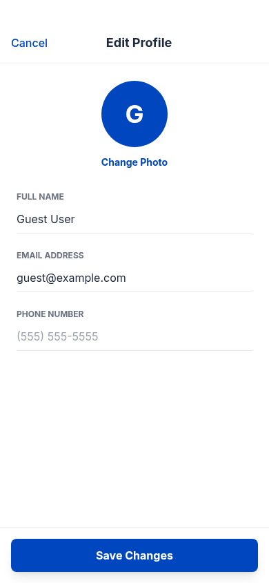

DEMO 01 / A field. A small correction.
每一次点击，
都要落在正确的位置。
同一个编辑页面，学生反复点击却没有进入输入状态。一次针对定位与状态的文字指导，让下一步操作有了明确目标。
THE TASK / 用户的目标
编辑个人资料，更新手机号。
Edit your profile to update your phone number.THE TURNING POINT
先激活字段，再确认状态
学生在手机号附近反复点击，界面始终没有进入有效的编辑状态。30 步耗尽后，新号码仍未保存。


关键执行截图。红圈仅标注原始点击位置，不改变截图内容。
A TEXTUAL INTERVENTION
教师给出方向，
学生负责行动。
教师提示先点中手机号输入框，检查光标或选中状态，再继续输入。学生随后自行点击、输入有效号码并保存。
教师原始指导 · 决策规则Tap the phone number field to activate it for editing.
Verify the phone number field is active by checking for a cursor or text selection before typing the new number.
WATCH THE EVIDENCE
先看纠错，再看独立执行。
两段视频分别回答：文字指导能否帮助学生纠错，以及训练后的模型能否独立完成。
FILM 01 / TEACHER-STEERED RECOVERY
一次指导，学生重新尝试。
失败过程 → 教师原始文字指导 → 恢复同一出错前状态 → W4 学生自行重试。
FILM 02 / INDEPENDENT EXECUTION
训练之后，独立完成。
第 8 步 W4 模型，从原失败记录保存的同一初始状态出发。没有教师提示，也没有预设动作。
WHAT THIS CASE SHOWS
从“重复点击”到“检查是否可编辑”
这段证据展示了文字指导如何改变学生的下一次决策：先定位控件，再确认操作前提。第 8 步模型的独立运行也完成了同一任务。
环境确认个人资料中的手机号已更新。训练后的 W4 模型从原初始状态出发，无教师指导完成相同任务。
关于这段展示
两项任务均参与训练。第 8 步模型的每项任务各做 3 次同初始状态、无教师指导的重复核验，均通过；重复运行不等于独立测试集。视频由真实执行截图剪辑，部分重复失败步骤明确标注省略。这些片段展示具体纠错过程，不能单独证明整体性能或泛化提升。